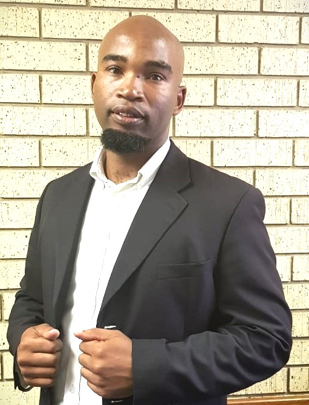

Xolani Canute Nhlengethwa | WDD 130

Hello! My name is Xolani Canute Nhlengethwa and I am from Dundee, South Africa. I enjoy watching movies and spending time with my family. I studied Civil Engineering, And I've obtained a National Diploma is Building and Structure Construction. I've been married for 15 years now, and the lord has blessed me with 3 childrens, aged between 16-4 years. Thank You.